#2653 Kopfgeld
Alternativ: Ransom
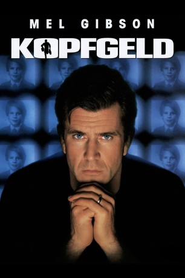 
 IMDB-Wertung: 6.6 / 10
IMDB-Wertung: 6.6 / 10  Metascore: 60
Metascore: 60 
Tom Mullen (Mel Gibson) ist millionenschwerer Eigentümer einer Fluggesellschaft und glücklicher Vater eines Sohnes (Brawley Nolte) - der entführt wird. Tom und seine Ehefrau Kate (Rene Russo) ziehen ein Team des FBI zu Rate, das die Täter zur Strecke und den Sprössling nach Hause bringen soll. Nachdem die Ermittler unter Anleitung von Agent Lonnie Hawkins (Delroy Lindo) ihre Zelte im Haus der Mullens aufgeschlagen haben, beginnt ein zermürbender Nervenkrieg. Schnell wird klar, dass Gut und Böse deutlich mehr verschwimmen, als es zu Beginn noch den Anschein hat und auch die Ehe von Kate und Tom wird an die Grenzen ihrer Belastbarkeit geführt. Eine unvorhergesehene Wendung des Geschehens sorgt schließlich dafür, dass Tom ausrastet und den Spieß umdreht: Vor laufenden Fernsehkameras verwandelt er die zwei Millionen Dollar Lösegeld in Kopfgeld! Er will eine landesweite Hetzjagd auf den Täter Jimmy Shaker (Gary Sinise) auslösen...
Jahr: 1996
Dauer: 121 Minuten
FSK: 16
Land: USA Studio: Buena Vista PicturesTonspuren: DD5.1 - ,
Untertitel: Deutsch,
Auflösung: 1080p (1920x1040) Größe: 8355 MB
Genre: Thriller, Krimi
Regisseur:  Ron Howard
Ron Howard
Drehbuch: Cyril Hume, Richard Maibaum, Richard Price, Alexander Ignon
Soundtrack: James Horner
Darsteller:
 Mel Gibson als Tom Mullen
Mel Gibson als Tom Mullen Rene Russo als Kate Mullen
Rene Russo als Kate Mullen- Brawley Nolte als Sean Mullen
 Gary Sinise als Det. Jimmy Shaker
Gary Sinise als Det. Jimmy Shaker- 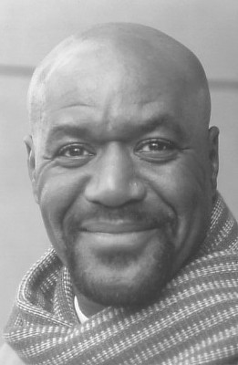 Delroy Lindo als Agent Lonnie Hawkins
- 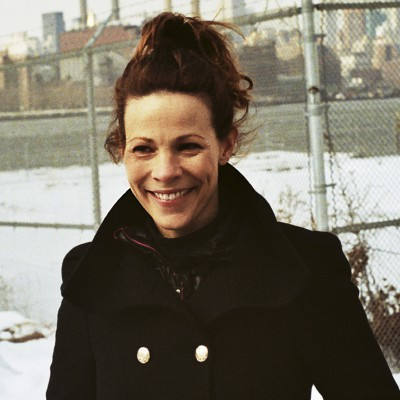 Lili Taylor als Maris Conner
 Liev Schreiber als Clark Barnes
Liev Schreiber als Clark Barnes Donnie Wahlberg als Cubby Barnes
Donnie Wahlberg als Cubby Barnes- Evan Handler als Miles Roberts
- Nancy Ticotin als Agent Kimba Welch
 Michael Gaston als Agent Jack Sickler
Michael Gaston als Agent Jack Sickler Paul Guilfoyle als Wallace
Paul Guilfoyle als Wallace José Zúñiga als David Torres
José Zúñiga als David Torres Dan Hedaya als Jackie Brown
Dan Hedaya als Jackie Brown John Ortiz als Roberto
John Ortiz als Roberto- A.J. Benza als Reporter Guest
- 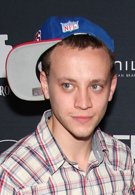 Peter Anthony Tambakis als Nelson
- Daniel May Wong als Agent Sam
- 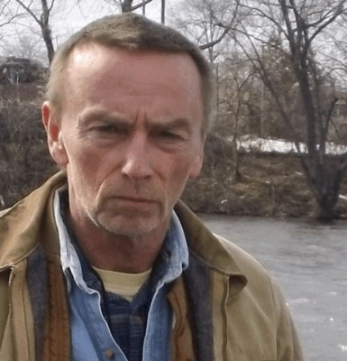 Mick O'Rourke als FBI SWAT Team #1
- 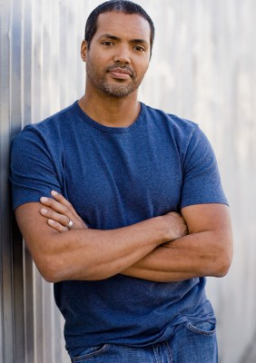 Henry Kingi Jr. als FBI SWAT Team #2
- Roy Farfel als FBI SWAT Team #3
- Lex D. Geddings als FBI SWAT Sniper
 Donna Hanover als News Reporter
Donna Hanover als News Reporter- 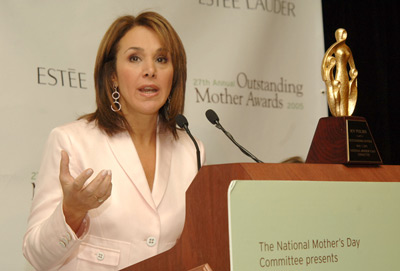 Rosanna Scotto als News Anchor #1
- James Georgiades als Cop #3
- 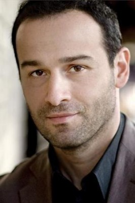 David Vadim als Cop #5
- Mitzie Pratt als News Reporter #3
- 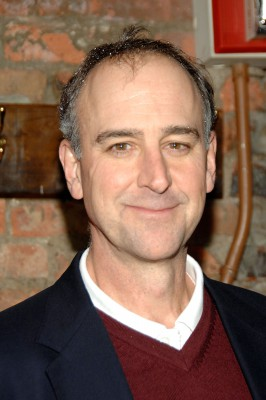 Michael Countryman als Bank Manager
- John Hartmann als Agent Lambert
- 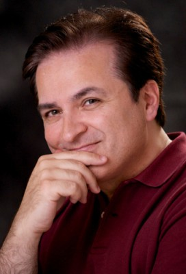 Anton Evangelista als FBI Agent
- Richard Price als Detective #1
- 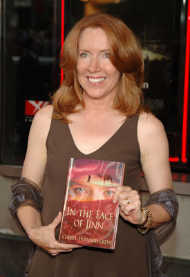 Cheryl Howard als Science Fair Coordinator
 Craig Castaldo als Radioman
Craig Castaldo als Radioman Jane Jenkins als Woman on Street #2
Jane Jenkins als Woman on Street #2- Lori Tan Chinn als Woman on Street #3
- Nathaniel Freeman als Man on Street #2
- Glenn J. Cohen als Bum Lying on Sidewalk , uncredited
- Jeff Eigen als Man at science fair , uncredited
- 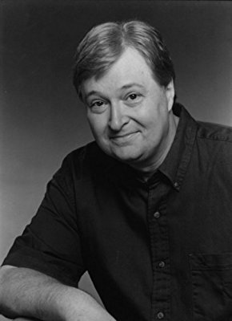 Rawleigh Moreland als Coroner , uncredited
- Kevin Neil McCready als Agent Paul Rhodes
- Allen Bernstein als Bob Stone
- Iraida Polanco als Fatima
- Mike Hodge als Man at Party
- Paul Geier als Mayor Barresi
- Louisa Marie als Woman at Party
- Edward Francis Joseph als Guest at Party
- Tony Hoty als Doorman
- John Short als Agent Dewey
- Ed Jupp Jr. als Technician
- Stephen Oates als NYPD SWAT Team
Datei: X:\1996\Kopfgeld (1996, FSK16, 1920x1040).mkv seit 30.11.2015
Festplatte: HD 1996-2002
 Es gibt insgesamt 78 Filme in der Gruppe '1996'
Es gibt insgesamt 78 Filme in der Gruppe '1996'